Table of Contents
Assignment
This week it was time to get started with the basics of electronics: milling a PCB from scratch and soldering on components.
* Demonstrate understanding of PCB production technology by completing the group assignment.
* Mill a circuit board from existing design using Fablab equipment.
* Populate the board you made, solder all the parts using electronics workbenches at the Fablab.
* Upload basic code to the attached XIAO board to make sure if you can blink LED on your PCB and detect button pushes.
* Document your process on your documentation website with photos and screenshots.Group
For starters, here is our Group Assignment page, courtesy of Lu Chen.
Milling
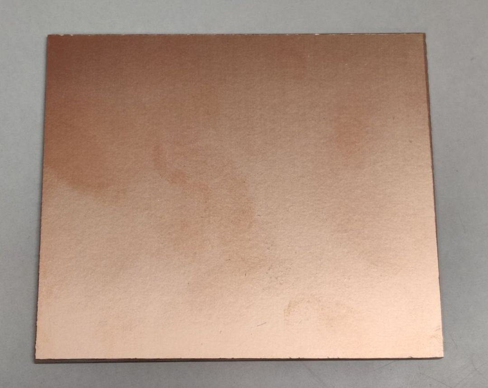I took a plate from the stack that was prepared for us and headed on over to the Roland MDX-40. Our direct instruction was on the other machine, the SRM-20, but we were assured that the wiki would have all the necessary information. That turned out to be the case, for the most part. There were a lot of steps in the whole process, so I took a bit of time to orient myself.
I scrubbed the protective layer off the copper plate with the metal scrubber. I placed the double-sided tape on the opposite side and just in time I remembered to measure the plate before placing it inside the machine.
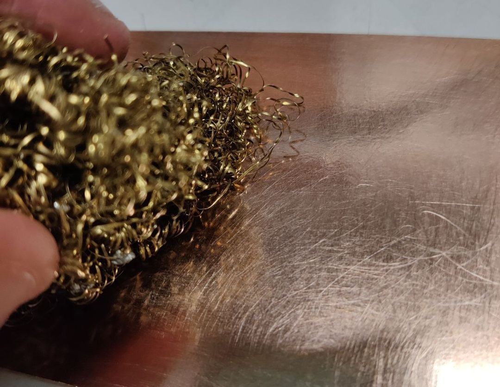 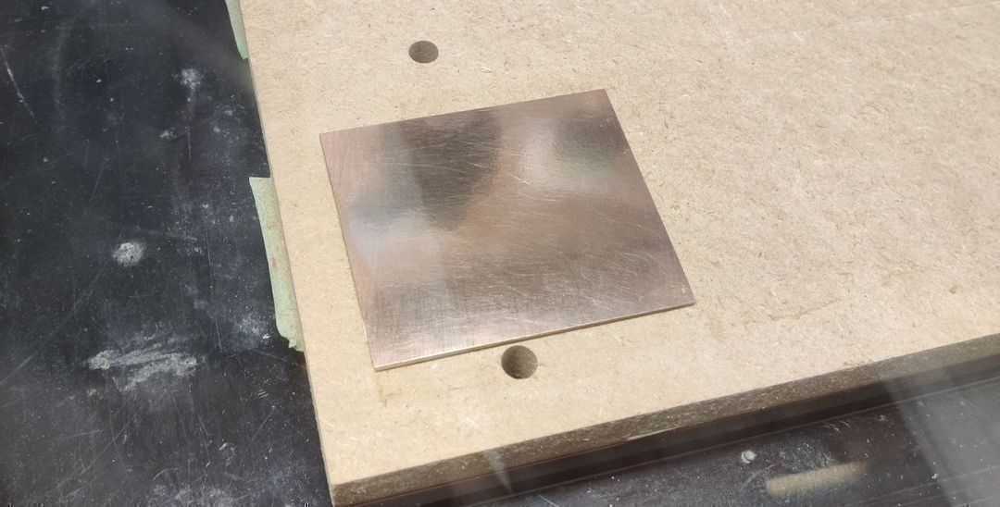 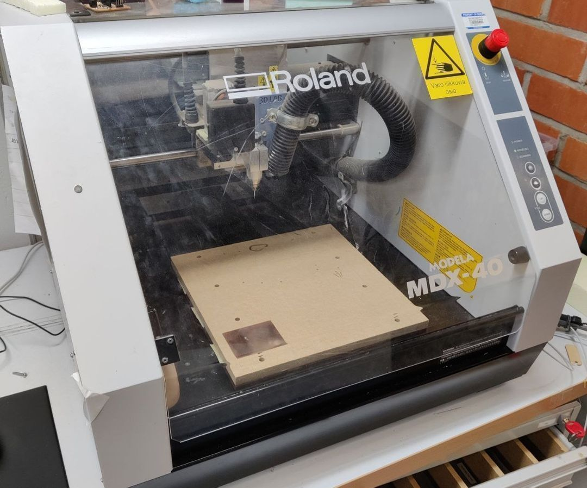Preparing the tool paths went mostly according to the instructions. One step confused me, however. Generating the contours for the paths. Imagine my surprise when I saw this:
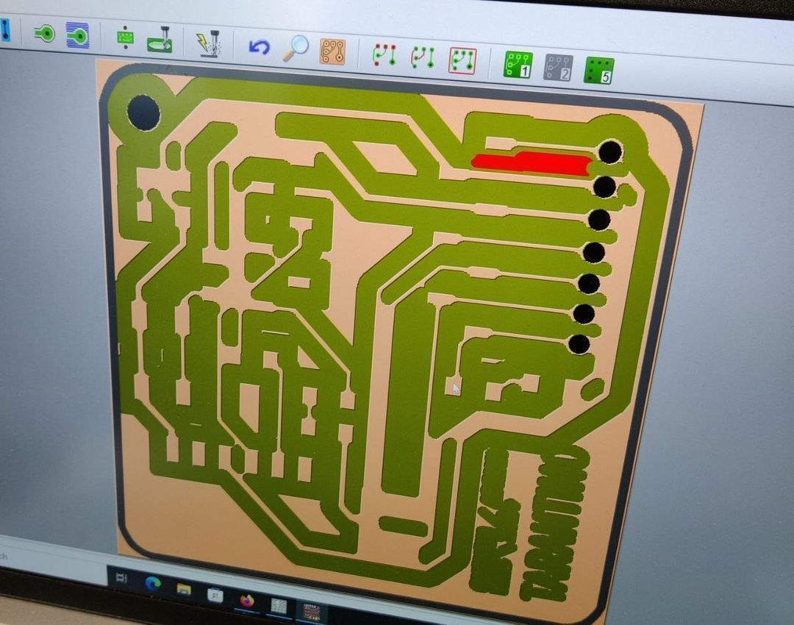As I understood it, the particular tool for the engraving that was mentioned in the wiki wasn’t available at the lab. The lab was out of tool #1, so in it’s stead we were to use #3. I assumed we were also to replace #1 with #3 in all the settings. This was not the case. Leaving tool #1 in the relevant settings allowed the contours to get generated like they were supposed to.
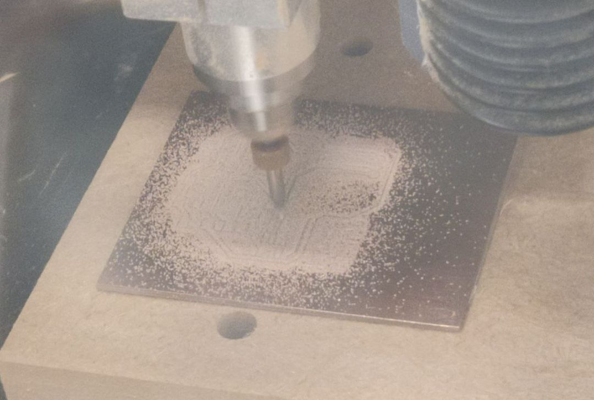I luckily didn’t have serious further issues with the actual milling. The machine followed the paths and the drill holes were properly aligned. Before the cutting I did accidentally set the Z origin at the wrong step, causing the machine to drill in thin air. Got a slight chuckle out of me.
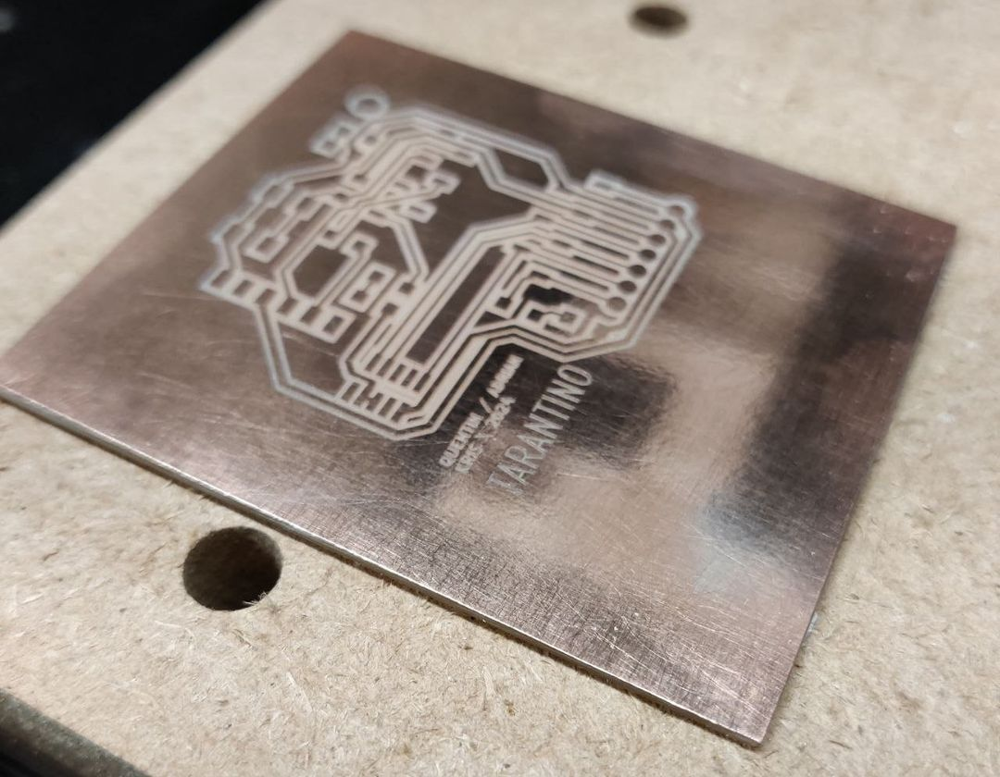 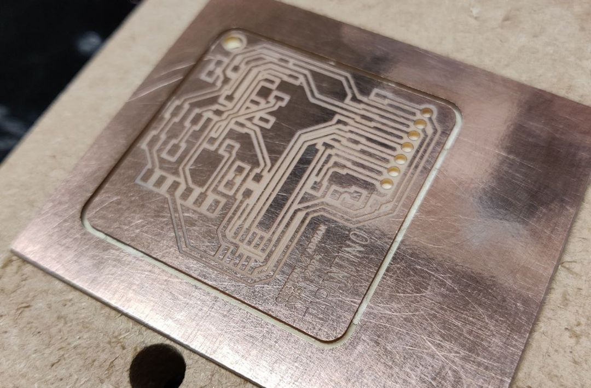When the cutting job was done, it turned out it wasn’t quite deep enough. The board remained fixed to the plate by a thin layer of material, and the drill holes also had that layer. They were easily removed by hand using the same drill tool.
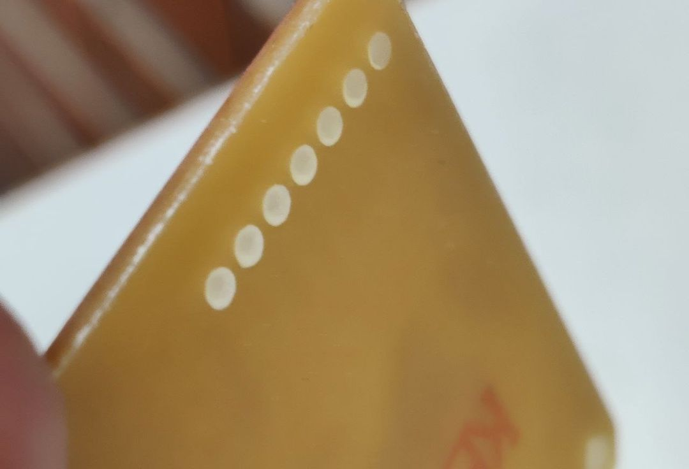Soldering
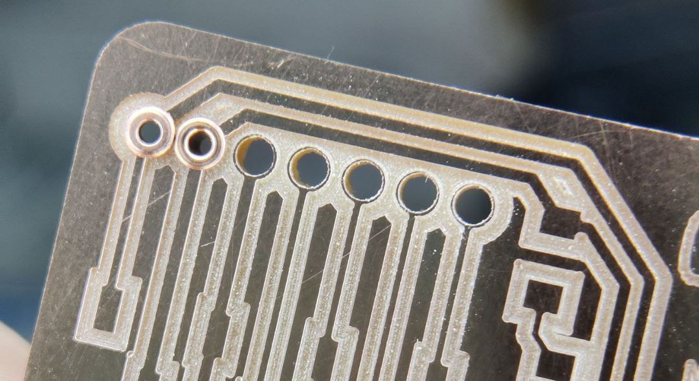I considered, briefly, not putting in the rivets. I was very nervous to do so, as I didn’t want to ruin by board and to have to make another one. Eventually I begrudgingly decided I’d be doing myself a disservice by not practicing it, and went ahead. The rivets didn’t end up touching, but they were very close. The ones in the above picture weren’t even the ones that were closed. I was surprised by just how much the rivets changed shape when they were hammered in.
I practiced soldering a little bit on a scrap board and continued with my real board after lunch.
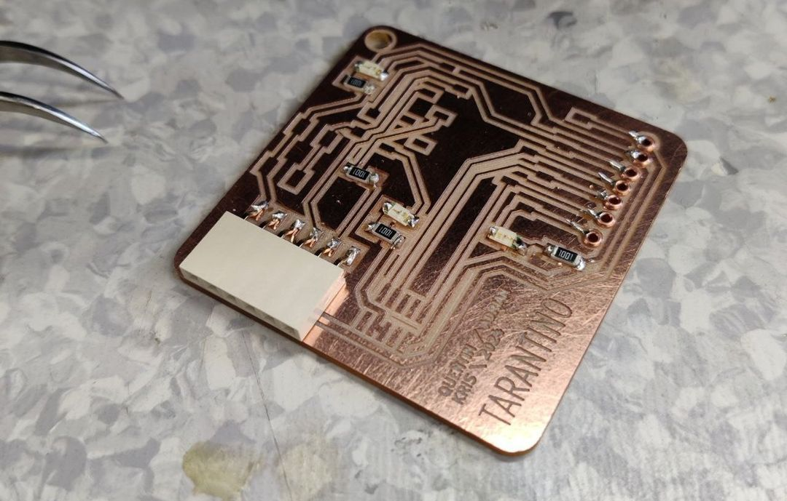Starting with the smallest components, moving upward.
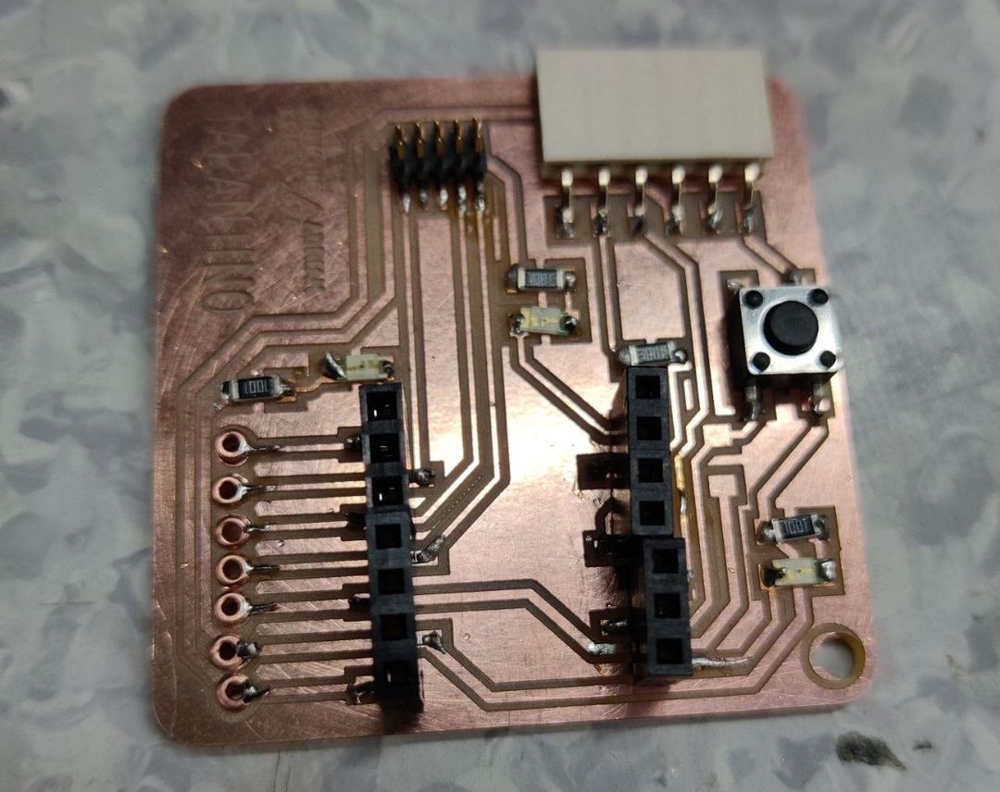There were some hiccups during the process. One of the larger components that the chip would get attached to got soldered at a slight angle. It was just forgivable enough that the component could bend a bit to still accomodate the chip. Definitely a point of improvement for the future.
All the circuits I tested with the multimeter seemed fine. It was time to head home and try it out.
Software Test
With the board plugged into my PC, I proceeded with the rest of the instructions. I couldn’t find the board in my devices, and from researching online I found out I had misinterpreted the instruction to first hold the boot button and then plug the chip in with the USB. I did those separately. But it was important to plug it in while still holding the boot button. Not sure if I was the only one confused by that bit.
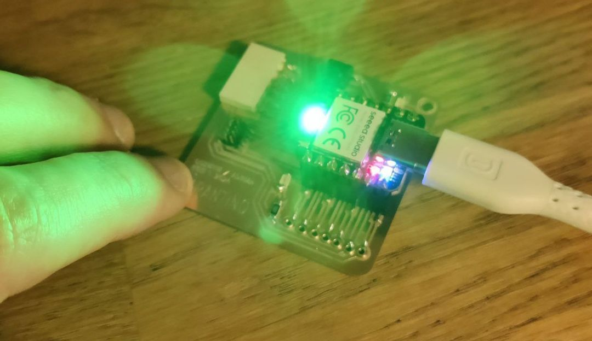After trying to get the hello_tarantino script to work and only getting undefined behavior from the light and the button, it was pointed out to me that my board was missing a resistor. Delightful. I had soldered on all the components from my box, but hadn’t bothered to double-check the example board or the schematic.
Soldering Detour
I got an extra resistor at the fablab and soldered it on.
Tested it out again back at home.
At first I thought it wasn’t working again. I had booted it up and uploaded hello_tarantino.ino to it, but the light was behaving weirdly. It went on an off not from when I pressed the button, but from when I tapped one of the corners of the chip with my finger.
Removing the plug and plugging it back in, only without the boot button pressed, was more promising. Now the light got properly toggled when the big button was pressed.
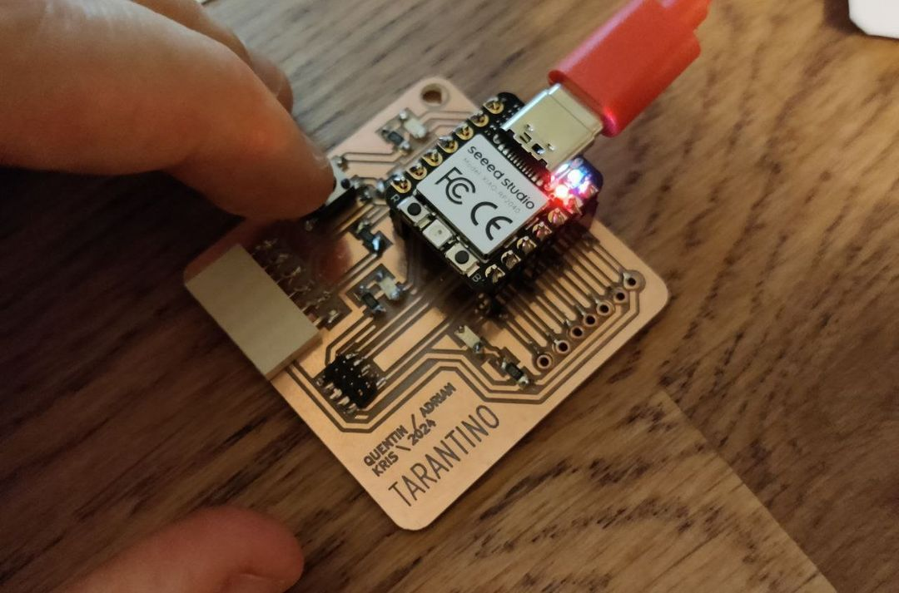 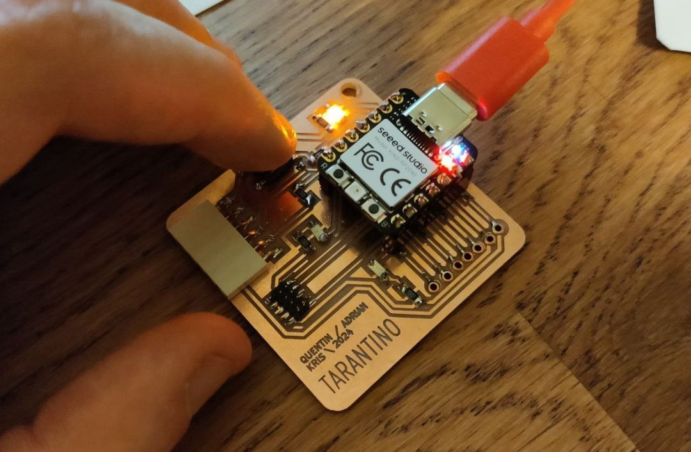